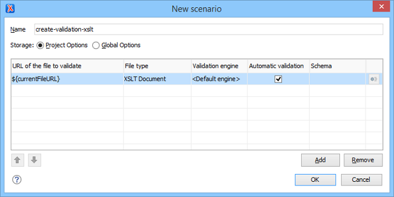

Creating a Validation Scenario for XSLT Stylesheets
You can validate an XSLT document using the engine defined in the transformation scenario, or a custom validation scenario. If you choose to validate using the engine from transformation scenario, and a transformation scenario is not associated with the current document or the engine has no validation support, the default engine is used. To set the default engine, open the Preferences dialog box and go to .
You can also create new validation scenarios or edit existing ones, and you can add JARS and classes that contain extension functions. To create or edit a validation scenario for an XSLT stylesheet, follow these steps:
-
With the XSLT file open in Oxygen XML Editor, select the
 Configure Validation
Scenario(s) from the menu, or the
Configure Validation
Scenario(s) from the menu, or the  Validation toolbar
drop-down menu, or from the Validate submenu when invoking the
contextual menu on the XSLT file in the Project view.
The Configure Validation Scenario(s) dialog box is displayed. It contains the existing scenarios, organized in categories depending on the type of file they apply to. You can use the options in the
Validation toolbar
drop-down menu, or from the Validate submenu when invoking the
contextual menu on the XSLT file in the Project view.
The Configure Validation Scenario(s) dialog box is displayed. It contains the existing scenarios, organized in categories depending on the type of file they apply to. You can use the options in the Settings drop-down
menu to filter which scenarios are shown.
Settings drop-down
menu to filter which scenarios are shown. -
To add a new scenario, click the
 New button.
The New scenarios dialog box is displayed. It lists all validation units of the scenario.
New button.
The New scenarios dialog box is displayed. It lists all validation units of the scenario.Figure 1. Add / Edit a Validation Unit  -
Configure the following information in this dialog box:
- Name - The name of the validation scenario.
- Storage - You can choose between storing the scenario in the Project Options or Global Options.
-
URL of the file to validate - In most cases, leave this
field as the default selection (the URL of the current file). If you want to specify a
different URL, double-click its cell and
enter the URL in the text field, select it from the drop-down list, or use the
 Browse drop-down menu or
Browse drop-down menu or  Insert Editor
Variable button.
Insert Editor
Variable button.
- File type - The file type should be XSLT Document.
- Validation engine - Click the cell to select a validation engine. You must select an engine to be able to add or edit extensions.
- Automatic validation - If this option is selected, the validation operation defined by this row is also used by the automatic validation feature.
-
To add or edit extensions, click the
 Edit extensions button. This button is only available if the
File type is set as XSLT Document and a
Validation engine is chosen.
The Libraries dialog box is opened. It is used to specify the JARS and classes that contain extension functions called from the XSLT file of the current validation scenario. They will be searched, in the specified extensions, in the order displayed in this dialog box. To change the order of the items, select the item and click the
Edit extensions button. This button is only available if the
File type is set as XSLT Document and a
Validation engine is chosen.
The Libraries dialog box is opened. It is used to specify the JARS and classes that contain extension functions called from the XSLT file of the current validation scenario. They will be searched, in the specified extensions, in the order displayed in this dialog box. To change the order of the items, select the item and click the Move up or
Move up or  Move down
buttons.
Move down
buttons.